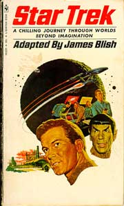
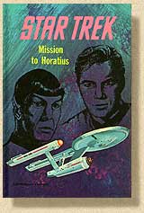
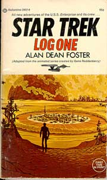
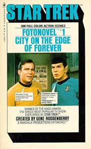
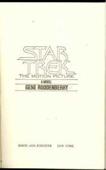
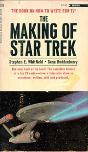
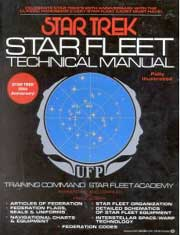
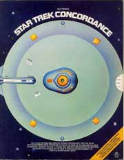
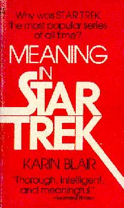
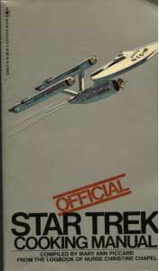

|
por Fernando
Rodrigues
Hoje existe um fenmeno que
comum a qualquer fandom: as fan-fictions. So histrias escritas por fs envolvendo personagens, eventos e cenrios tirados de suas sries favoritas. Para alguns, escrever uma fan-fiction o pontap inicial para a realizao de uma carreira como escritor. Para outros, permite vivenciar novas aventuras com seus personagens mais queridos.
Sempre haver quem escreva, e sempre haver quem leia.
E, em alguns casos, o seriado envolvido a pedra fundamental de uma milionria franquia, como o caso de
Jornada nas Estrelas. Quando isso acontece, qualquer interesse manifestado pelos fs transforma-se quase instantaneamente em uma lucrativa linha de negcios.
O fenmeno explicado acima deu origem a centenas de livros de Jornada nas Estrelas
ao longo das dcadas. So adaptaes de episdios, adaptaes de livros, guias de episdios, novelas, romances, contos, biografias, making of's, cientficos... a lista longa!
Aqui voc aprende um pouco sobre a histria e as origens dessa literatura trekker. Assim como na seo, a histria aqui est dividida em duas categorias:
Literatura (romances, novelas, adaptaes, roteiros), e Referncia (todos os demais).
Literatura
 A estria oficial de
Jornada nas Estrelas no mundo das livrarias aconteceu ainda em 1967. A editora Bantan Books, inspirada pelo sucesso das adaptaes de episdios da srie "Alm da Imaginao", lanou neste ano o livro "Star Trek", de James Blish. O livro trazia adaptaes, em forma de contos, de sete episdios da
Srie Clssica.
Antes de 1967, Blish era conhecido como um premiado autor de fico
cientfica, tendo ganho o Hugo por sua novela "A Case of Conscience", em que falava sobre a religio humana, devido existncia de aliengenas. Porm, seu trabalho de maior sucesso, at hoje, seriam as adaptaes que realizou para
Jornada.
Enquanto seus trabalhos anteriores tinham a tiragem interrompida, os livros de
Jornada tiveram 15 re-impresses em apenas cinco anos. A carreira de Blish virou de cabea para baixo.
Com o sucesso do primeiro livro, ele passou a adaptar todos os episdios da srie, sem preocupao especfica com a ordem. Nos primeiros volumes, Blish no se preocupava muito em transcrever totalmente o episdio, deixando muitas cenas de fora, e alterando outras. Com o sucesso e a aceitao do pblico, porm, passou a tentar incluir o mximo possvel dos episdios em suas adaptaes.
 A partir do terceiro volume, passou a incluir um prefcio, onde discutia e discorria sobre a popularidade dos livros de
Jornada comparada aos seus, discutia cartas individuais de leitores e respondia a perguntas sobre as eventuais discrepncias entre o episdio e a adaptao.
Blish viria a falecer em 1975, sem completar a adaptao de todos os 79 episdios. A concluso do trabalho coube a sua esposa, J.A.
Lawrence.
Ainda em 1968, a prpria Bantan Books publicou a primeira novela de
Jornada, "Mission to Horatius", de Marck Reynolds. Ao todo, foram 19 novelas, publicadas entre 1968 e 1981.
 Algumas foram escritas por escritores consagrados da fico cientfica, como o prprio Blish ("Spock Must Die!", de 1970), Joe Haldeman ("Planet of Judgement", de 1977), e o pai dos pingos (tribbles) David Gerrold ("World Without End", de 1979). A maioria das novelas, porm, foi escrita por autores contratados pela Bantan, com um nvel de qualidade bem baixo.
Alan Dean Foster, a partir de 1975, fez para a Srie Animada o que Blish havia feito com a
Srie Clssica, novelizando seus episdios. Ao contrrio de Blish, porm, que trabalhava a partir de roteiros de episdios com uma hora de durao, Foster partia dos roteiros de desenho, com meia hora de durao. Teve, assim, liberdade para expandi-los, dando s histrias uma profundidade que no seria possvel no desenho.
 Em 1977, a Bantan iniciou a publicao de uma curiosa linha de livros de
Jornada: fotonovelas. A primeira trazia a "fotonovelizao" do episdio
"The City on the Edge of Forever". Essas fotonovelas eram livros que traziam fotografias do episdio original, sobre as quais eram adicionados bales de fala. Parece estranho, mas conseguiam apresentar o episdio na ntegra. De qualquer modo, acredito que Harlan Ellinson no tenha gostado muito dessa idia.
Ainda em 1979, a Pocket Books entra no mercado, com o lanamento da adaptao do primeiro filme de
Jornada, feita por Gene Roddenberry em pessoa. At ento, a Pocket no numerava os ttulos dos livros publicados de
Jornada. Apenas em 1984 teria incio esta prtica, que dura at hoje. A partir de 1981, a Bantan Books perdeu o interesse nas publicaes
da franquia, deixando a Pocket como nica editora reponsvel pela publicao de livros "oficiais".

Referncia
Se acompanhar a evoluo das novelas e romances de Jornada tarefa que pode consumir toda a vida de um trekker, trabalho ainda maior existe na rea de livros de referncia. Uma infinidade de livros j foi escrita, entre oficiais e no-oficiais. Eles vo desde bastidores da srie at livros de culinria. Nenhum assunto escapa ao fandom, incluindo at mesmo anlises sobre o que torna
Jornada to popular. A evoluo dos livros de referncia transcorreu mais ou menos assim.
 O primeiro deles foi publicado com o aval de Roddenberry, e intitulava-se "The Making Of Star Trek". Escrito por Stephen E. Whitfield que, a pedido de Roddenberry, teve livre acesso aos estdios da Desilu e acompanhou o desenvolvimento da srie, o livro ainda contm cpias de memorandos da produo, comentrios de Roddenberry, esboos preliminares das naves, entre outros fatos curiosos. O mesmo Whitfield, assinando seu nome real, Stephen E. Poe, seria o responsvel, quase 30 anos depois, pelo making of de Voyager, intitulado "A Vision of the Future".
Talvez o mais famoso e controverso livro de referncia de Jornada at hoje tenha sido escrito por ningum menos que Leonard Nimoy, mais conhecido como o Sr. Spock, em 1975, quando publicou sua autobiografia "I Am Not Spock". Quatro anos mais tarde, dando vazo a uma inveja incontida, William Shatner lanaria sua prpria autobiografia, intitulada "Shatner: Where No Man...: The Authorized Biography of William Shatner". Como faria com todos os outros livros, Shatner contou com a colaborao de mais dois autores, Sondra Marshak e Myrna Culbreath.
 Ainda em 1975, surge o primeiro manual tcnico, "Star Fleet Technical Manual", de Franz Joseph. Mais do que isso, este foi o primeiro manual tnico publicado nos Estados Unidos baseado em um filme ou srie de TV. O livro se tornou referncia para todos os que o seguiram, incluindo uniformes, bandeiras, mapas, e esquemas de aparelhos e naves, alguns deles nunca vistos anteriormente na srie de TV. Seguindo a mesma linha, em 1976 foi publicado o primeiro manual mdico, "Star Fleet Medical Reference Manual", constitudo por uma srie de artigos de diversos autores, entre eles Doug Drexler, que eventualmente trabalharia na produo das sries. O organizador da obra foi Geoffrey Mandel, outro artista que acabaria na produo de
Jornada e que j foi at entrevistado pelo TB (leia
aqui).
 Em 1976, ano de comemorao de dez anos de
Jornada nas Estrelas, foi publicado o primeiro guia de episdios, "Star Trek Concordance", de Bjo Trimble, que continua sendo um dos melhores livros de referncia da srie. Inclua ilustraes feitas por fs e considerava a
Srie Animada como parte do universo oficial, ao contrrio das publicaes mais recentes. O livro posteriormente seria re-editado pela Pocket, incluindo os filmes e algumas temporadas de
A Nova Gerao.
 A esta altura do campeonato, a abrangncia do fenmeno trekker intrigava os mais variados setores da sociedade americana, levando inevitvel publicao de um estudo sobre o assunto. "Meaning in Star Trek", de 1977, foi o primeiro livro a questionar os motivos da popularidade da srie. Escrito por Karin Blair, seguidora da escola de Carl Jung, analisa a srie dentro de uma perspectiva de arqutipos. Todos os episdios so analisados, alguns mais de uma vez. "Fascinante!". A capa do livro traz um comentrio de Leonard Nimoy: "Profundo, inteligente e significativo".
Provando a abrangncia da srie, em 1978 houve a  publicao do primeiro livro de culinria baseado na srie. "Official Star Trek Cooking Manual", de Mary Ann Piccard (nome sugestivo, no?), o livro trazia uma introduo assinada por Christine Chapel, onde era explicada a importncia de uma dieta nutritiva e balanceada a bordo de uma nave estelar. Entre as receitas, a torta de ma favorita de Kirk, e pratos Klingons. Pergunto-me se algum se deu ao trabalho de testar as receitas...
Estes so apenas alguns exemplos de livros de referncia, dentre os pioneiros. Muitos outros seriam escritos, ao longo dos anos.
Referncias:
http://bboard.scifi.com/bboard/browse.cgi/1/5/753/4521
http://www.well.com/user/sjroby/lcars/index.html
http://www.psiphi.org/cgi/upc-db/
http://www.ridgecrest.ca.us/~curtdan/Novels/Main_x.html
|